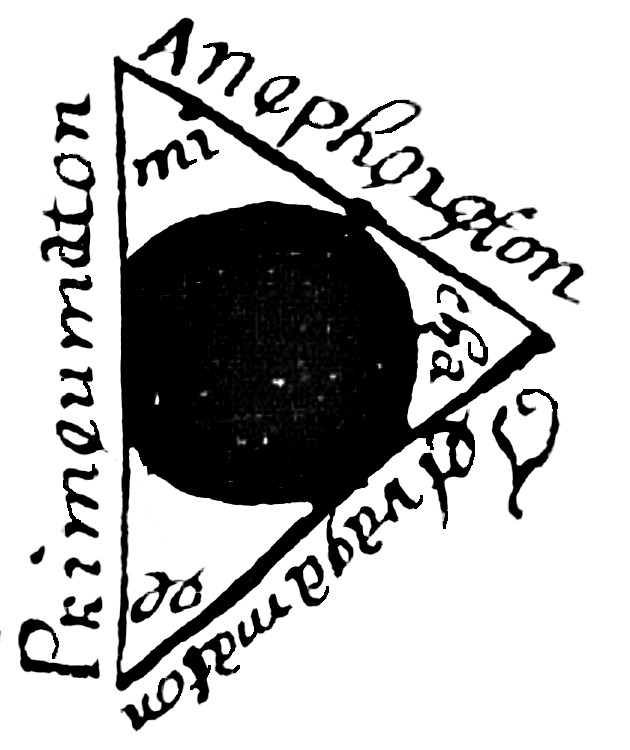
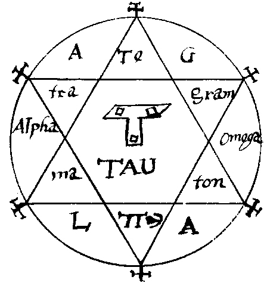
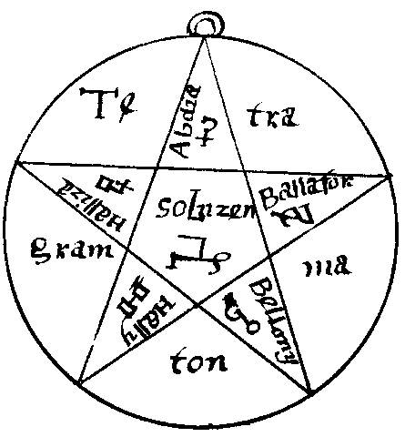
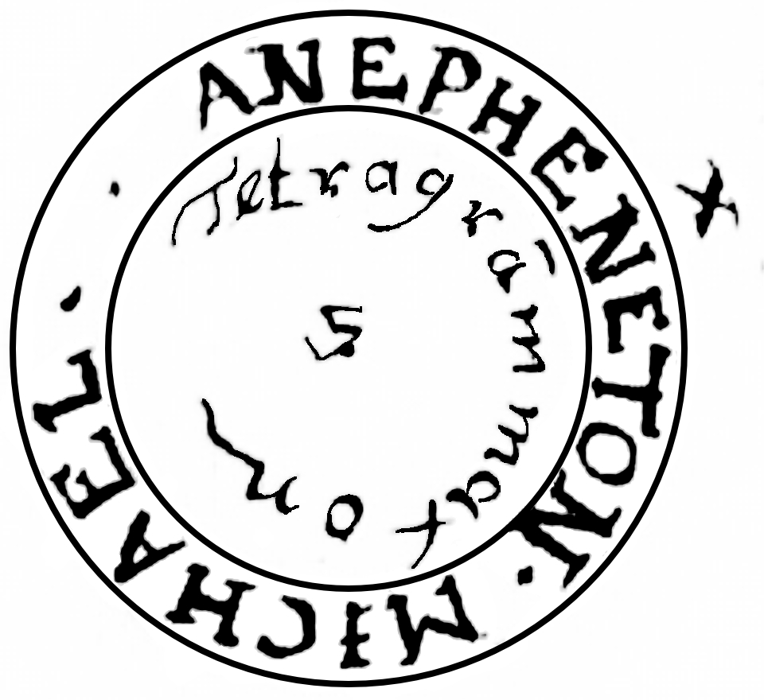
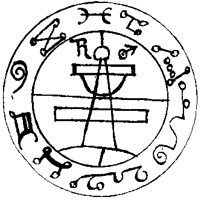
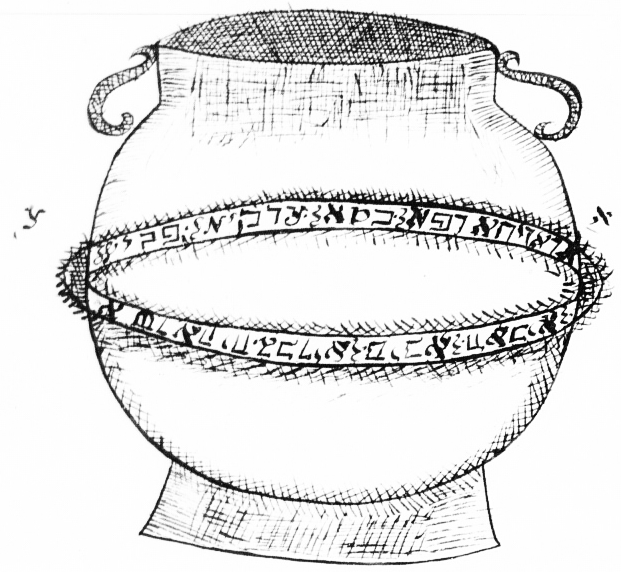

The Implements
召唤阵与仪式器具
The Summoning Circle & Implements —— Goetia 中施术者用以护身、约束与封印灵体的七件器具。

魔法圆 · 召唤阵
The Magic Circle
施术者站立其内、以神名护佑自身的圆阵。环周镌刻 Ehyeh、Tetragrammaton 等圣名，内环依阿格里帕「十重天」之序列满众天使之名，五芒星各角放置蜡烛。它是召灵仪式中最核心的防护器具。The circle within which the operator stands, shielded by divine names. Its perimeter is lettered with Ehyeh, the Tetragrammaton and the angelic orders after Agrippa's scale of ten, with candles at the points of the pentagram — the central protective implement of the conjuration.

魔法三角
The Magic Triangle
命令灵体显现于其中的三角阵。三角之内镌刻圣名，是所召之灵「被约束、被显现」之地——圆用于护身，三角用于召现。The triangle into which the spirit is commanded to appear. Inscribed with holy names, it is the place where the spirit is bound and made visible — the circle protects, the triangle summons.

六芒星 · 所罗门六角形图
Solomon's Sexangled Figure
即「所罗门之印」。六芒星四周环绕 AGLA、Tetragrammaton、Alpha 与 Omega 等圣名，中央为 Tau 及其变体，是护身与召灵的经典符号。The Seal of Solomon. The six-pointed star is ringed with the names AGLA, Tetragrammaton, Alpha and Omega, with a Tau at its centre — a classic symbol of protection and conjuration.

五芒星 · 所罗门五角形图
The Pentagonal Figure of Solomon
五芒星各角镌刻四字神名（Te-tra-gram-ma-ton），中央为 Tau。它与六芒星并列为 Goetia 最常用的封印与护符图形。The pentagram bears the Tetragrammaton lettered in its points, with a Tau in the middle. Alongside the hexagram, it is among the most-used seals and talismans of the Goetia.

所罗门之戒
The Ring of Solomon
传说所罗门凭此戒指号令群魔、役使精灵。它是整套传说中最核心的「权柄」象征，也与「所罗门之印」的意象互相映照。By legend the ring with which Solomon commanded the demons and spirits. It is the central emblem of authority in the whole legend, mirroring the imagery of the Seal of Solomon.

所罗门秘印
The Secret Seal of Solomon
校订者指出，此秘印在更早的文献中无先例可考，为 Lemegeton 所独有。它用于召唤仪式的特定环节，被视为整套体系的「密钥」之一。The editor notes that no precursor to this seal is known; it appears unique to the Lemegeton. Used at a particular point of the rite, it is regarded as one of the system's "keys."

铜瓶
The Brass Vessel
传说所罗门用以封印不顺从恶魔的铜瓶——即那口以神名封口、沉入巴比伦深渊的容器。它是「召唤、约束与封印」这一核心观念的具象。The brazen vessel in which Solomon sealed the disobedient spirits — the one closed with the Name and cast into the deeps of Babylon. It embodies the core idea of summoning, binding and sealing.